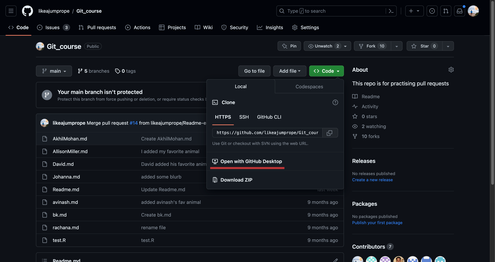
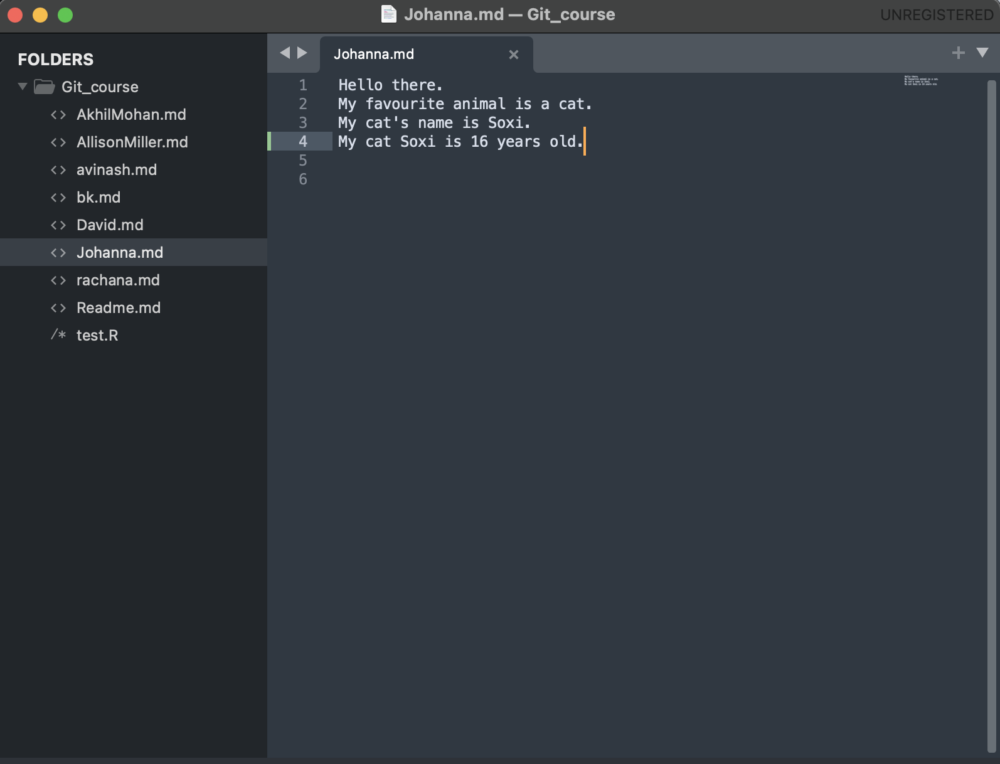
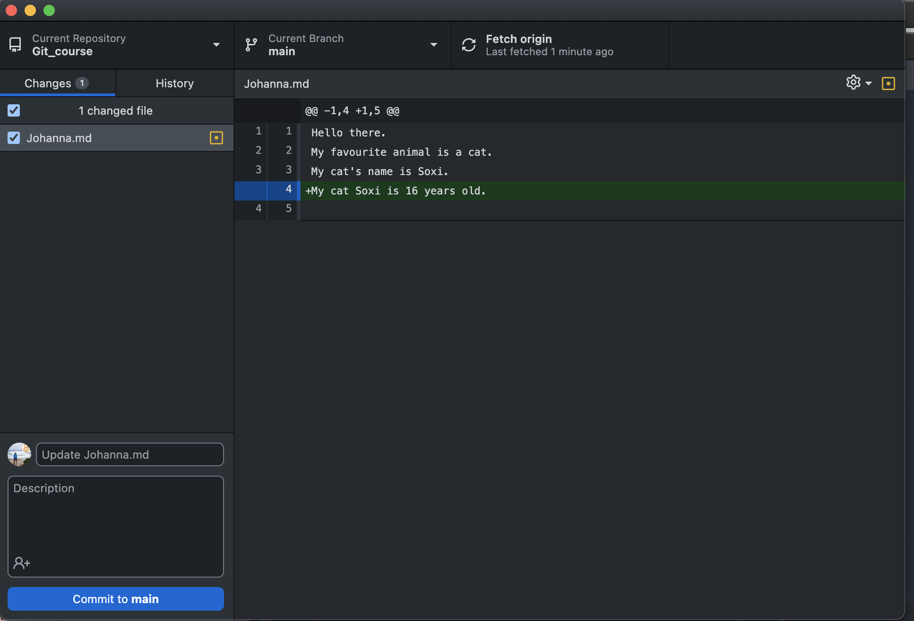
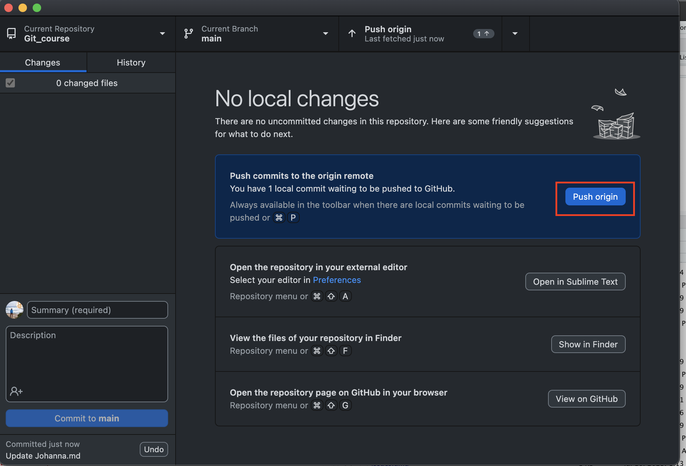

Github Desktop
Interaction between Github online and your local machine
We have been working on Github online up until now. This can be useful, but you might want to version control and collaborate on projects that you have already on your machine, or on programming scripts that you need to run and test on your local machine, such as python or R scripts. We will now move to the integration between Github online and your local machine.
The two way street between Github online and your local machine
There a two ways of interaction between Github online and your local machine:
I. Make a copy (a clone) of an online repository on your local machine.
II. Import a repository from your local machine onto Github online.
Github Desktop
The tool that we are going to use on your local machine is Github Desktop. Git can also be used from the command line on your local machine, but Github desktop is a nice and more intuitive GUI tool for beginners.
You should have Github Desktop installed. If not, do it now.
I. Cloning a repository from Github online onto your local machine
Let’s start with making a local copy of an existing online repository. This processing is called cloning.
- Navigate to your fork of the Git_course.
Click on the green Code button. Select Open with Github Desktop.

Accept the warning, if any. Clone the repository.

The repository now exists as a cope on your local machine!
Exploring Github Desktop
Let’s have a look at Github Desktop.
First of all, Github Desktop gives you an overview over your newly created repository. It shows you: the name of the repository (Git_course), the branch you are on (main) and when the repository was last updated from the origin repository.

Note that this newly created repository is a standalone repository. Hence, changes made to the origin (or upstream( repository are not automatically pulled into this new repository. Instead, you can do this manually by clicking the Fetch origin button in Github Desktop. This procedure is similar to the sync fork button on Github online.
Github Desktop also gives you three options how to work with the repository:
Show your files in Finder (Mac) or in Explorer (Windows). Here Github Desktop will show you where the repository is located on your hard drive.
Open the files in an external editor. Here Github Desktop will use one that is installed on your machine.
Show the repository on Github online. Here Github Desktop will lead you back to Github online.

Note also that Github Desktop shows you that you have not yet made any changes to your local repository. Let’s change that!

Make changes to your local repository
You cannot make changes in Gthub Desktop itself (it is not a text editor). This is why you need an external text editor. Choose the option to open the repository in an external editor. I use Sublime in this example.
Regardless of the text editor, you should have a somewhat similar organisation of your repository in your text editor:

- An overview over all the existing files in your repository (usually on the left side)
- Some way to create a new file.
Create a new .md file, or make changes to an exiting file. In this case, I have added one line to the Johanna.md file. SAVE your changes.

Go back to github Desktop. You should see your new file/your changes.

Similar to Github online, github Desktop will not allow you to make any changes without committing them. Write an appropriate commit message and commit your changes.

How do we now update our repository in Github online? Github Desktop makes this easy. You should see that one change (the one you have just committed) is waiting to be pushed to Github online:

Click the push button and check your online repository: Your changes should now be there! If you want to, you can also make a PR to the upstream repository.
The other way around: make changes to your online repository
Now that you have established the connection between the repository on you local machine and Github online, any changes to your repository on Github online should be recorded by your github desktop application. You might have to click the fetch origin button.
Make and commit changes in your online repository,
Click the fetch origin button on your github desktop application, You should see something like this:

Pull the changes in your local repository.
Final remarks - it can get messy
You should have realized that now we have already three copies of the Git_course repository: The one under the upstream account, the one under your (the origin) account, and the one on the local machine. Each repository can be manipulated and changed independently. In addition, we can have branches of each repository at each level. With this many copies of a repository it is easy to loose oversight of which changes have been made to which repository and which one is the most up-to-date one. A good commit history and habits can be life saving!